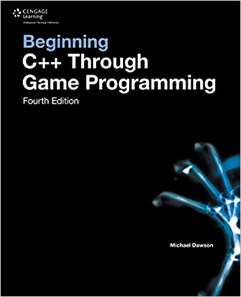
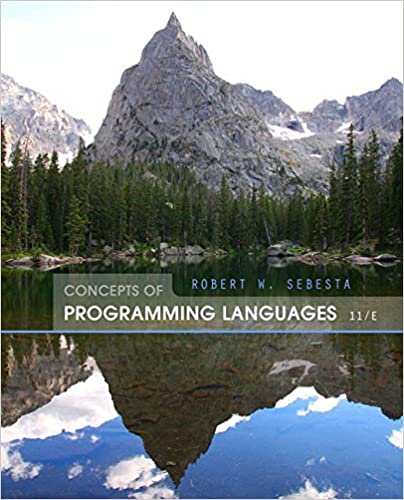
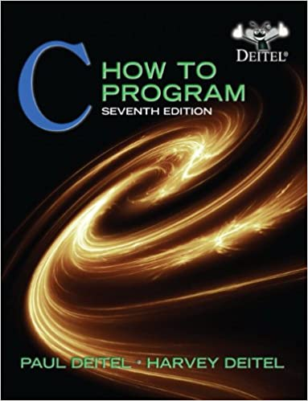
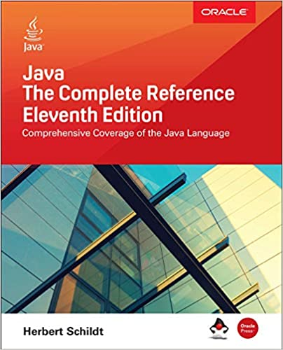

-
This book is not just about learning to program; although you will learn to code. If you want to program professionally,
it is not enough to learn to code; that is why, in addition to helping you learn to program, I also cover the rest of the things you need to
know to program professionally that classes and books don't teach you. "The Self-taught Programmer" is a roadmap, a guide to take you from
writing your first Python program, to passing your first technical interview. I divided the book into five sections:
1. Learn to program in Python 3 and build your first program.
2. Learn Object-oriented programming and create a powerful Python program to get you hooked.
3. Learn to use tools like Git, Bash, and regular expressions. Then use your new coding skills to build a web scraper.
4. Study Computer Science fundamentals like data structures and algorithms. - introduces students to the fundamental concepts of computer programming languages and provides them with the tools necessary to evaluate contemporary and future languages. An in-depth discussion of programming language structures, such as syntax and lexical and syntactic analysis, also prepares readers to study compiler design.The Eleventh Edition maintains an up-to-date discussion on the topic with the removal of outdated languages such as Ada and Fortran. The addition of relevant new topics and examples such as reflection and exception handling in Python and Ruby add to the currency of the text. Through a critical analysis of design issues of various program languages, Concepts of Computer Programming Languages teaches programmers the essential differences between computing with specific languages.
- When it comes to game programming, C++ is the name of the game. If you aspire to move from game player to game creator, it all starts with learning the fundamentals of C++ and game-programming basics. With BEGINNING C++ THROUGH GAME PROGRAMMING, FOURTH EDITION, you will find an up-to-date and thorough introduction to everything you need to get started--with no previous programming experience required. In the new fourth edition of this popular guide to learning C++, you will work with a complete program while learning each new concept and a game program at the end of each chapter. A final game project at the end of the book draws together everything you've learned. Written with the beginning programmer in mind, BEGINNING C++ THROUGH GAME PROGRAMMING, FOURTH EDITION is a great way to get started in game programming.
- For introductory courses in C Programming. Also for courses in Programming for Engineers, Programming for Business, and Programming for Technology. The Deitels' How to Program series offers unparalleled breadth and depth of object-oriented programming concepts and intermediate-level topics for further study. Using the Deitels’ signature “Live-Code™ Approach,” this complete, authoritative introduction to C programming introduces fundamentals of structured programming, and covers relevant features of C language’s C-201X standard. It also includes an updated treatment of C++ for those who want to transition to object-oriented concepts. Finally, new material on security is added to this edition.
- Fully updated for Java SE 11, Java: The Complete Reference, Eleventh Edition explains how to develop, compile, debug, and run Java programs. Best-selling programming author Herb Schildt covers the entire Java language, including its syntax, keywords, and fundamental programming principles. You’ll also find information on key portions of the Java API library, such as I/O, the Collections Framework, the stream library, and the concurrency ilities. Swing, JavaBeans, and servlets are examined and numerous examples demonstrate Java in action. Of course, the very important module system is discussed in detail. This Oracle Press resource also offers an introduction to JShell, Java’s interactive programming tool. Best of all, the book is written in the clear, crisp, uncompromising style that has made Schildt the choice of millions worldwide.
- JavaScript is the programming language of the web and is used by more software developers today than any other programming language. For nearly 25 years this best seller has been the go-to guide for JavaScript programmers. The seventh edition is fully updated to cover the 2020 version of JavaScript, and new chapters cover classes, modules, iterators, generators, Promises, async/await, and metaprogramming. You’ll find illuminating and engaging example code throughout. This book is for programmers who want to learn JavaScript and for web developers who want to take their understanding and mastery to the next level. It begins by explaining the JavaScript language itself, in detail, from the bottom up. It then builds on that foundation to cover the web platform and Node.js.
1.The Self-Taught Programmer: The Definitive Guide to Programming Professionally
2.Concepts of Programming Languages (11th Edition)
{kind=link}
3.Beginning C++ Through Game Programming
{kind=link}
4.C: How to Program, 7th Edition
{kind=link}
5.Reactions: An Illustrated Exploration of Elements, Molecules, and Change in the Universe
{kind=link}
6.JavaScript: The Definitive Guide: Master the World's Most-Used Programming Language 7th Edition